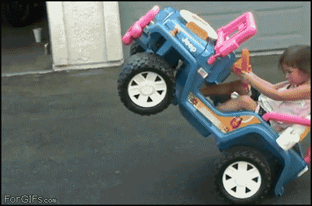
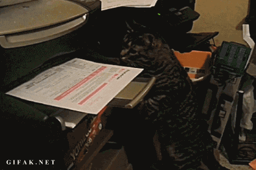

Hello! I like that you’re curious enough to click that link in my email signature. Here’s where I tell you that I value simplicity and prefer not to clog your inbox with words you may not need, but if you need answers, hopefully this doc will help.
I’m a terrible email procrastinator, it takes me a long time to write them. If your message requires a response I’ll likely give a short reply or add to my todo list and respond properly in due course. Anything with an important date will get added to my calendar. So, if I haven’t replied, it’s more likely that my todo list is particularly long, rather than my memory has failed. I’m currently aiming to process email twice a day. If you require an urgent response, @ reply / DM me.
Where possible, my emails include five sentences or less. If more than that are necessary I generally prefer to speak (on a call, in person or via Google Hangouts) or create a Google Doc. Hopefully this lessens the burden on your inbox too. Inspired by ZenHabits I’ve unsubscribed from nearly every mailing list and prefer allocating Twitter time to consume content.
I use Twitter and Spotify every day, Foursquare and Instagram fairly often and LinkedIn once in a blue moon. I also have a website at harmantom.com. Although I technically have a Facebook account I pretty much never go there or see FB event notifications, I do however use Facebook Messenger and Whatsapp (and get their notifications).
Here’s a photo, although it’s unlikely I’ll be holding a plant. I’m tall and slim and likely carrying a bicycle helmet.
I’m a designer who rides bikes and makes music. I think a lot about human behavior, and the systems we use to interact with technology and each other. I’ve an MFA from SVA and have worked on a variety of projects in a range of capacities from startup co-founder to design director to my current role as Product Design Manager at BuzzFeed. LinkedIn has more details on my professional background, which I last updated extensively in July 2015.

Yes. I wouldn’t recommend printing, unless you’re a cat. And if you are, here’s a friend for you. 
{kind=link}